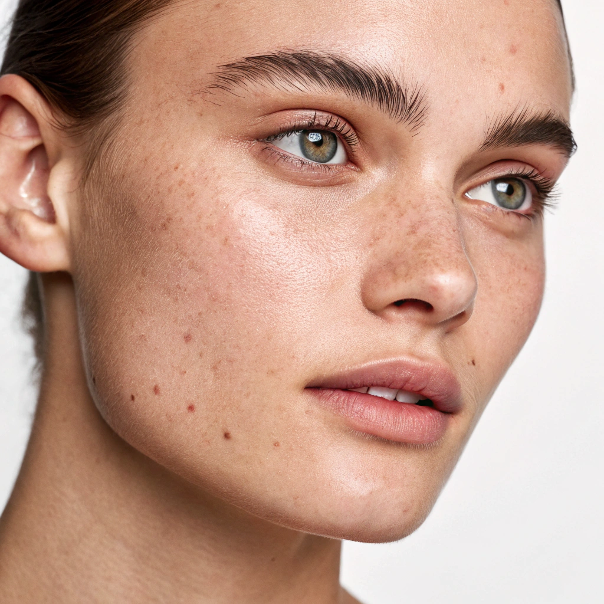
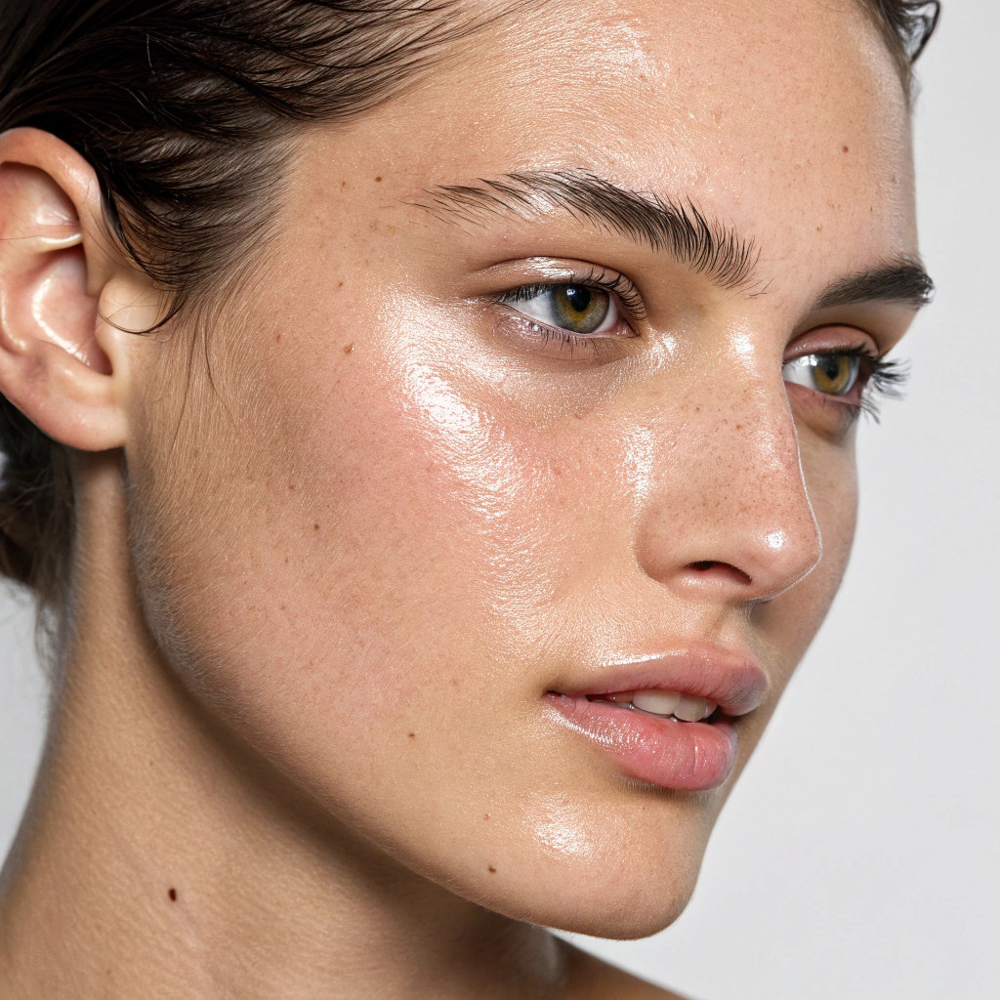
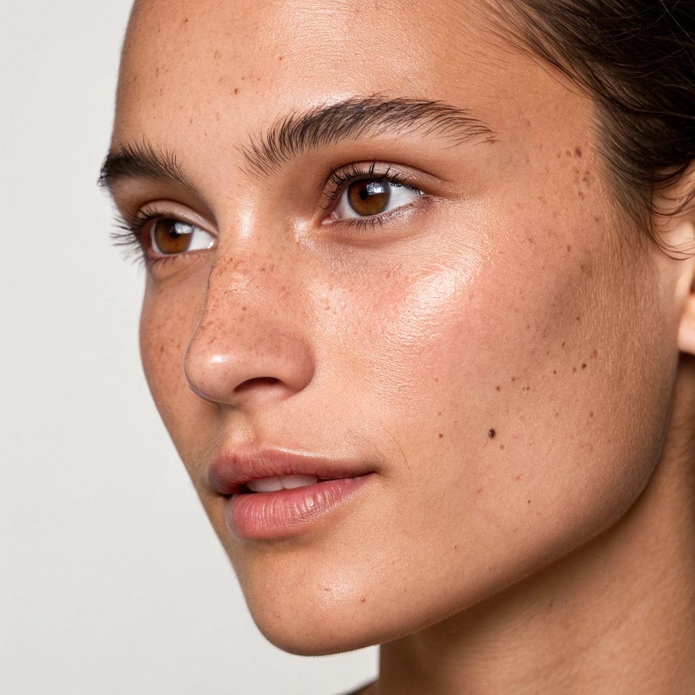

Gündüz Rutini ☀️
Güne cildinle birlikte hazırlan.
Kuru Ciltler için Gündüz Rutini
Temizle
Cildi kurutmayan krem formda temizleyici.
Tonikle
Alkolsüz, hyaluronik asit içeren tonik.
Besle
C vitamini veya yoğun nem serumu.
Nemlendir
Seramid içeren yoğun yapılı krem.
Koru
Güneş kremi (SPF 50+) ihmal etme.
Yağlı Ciltler için Gündüz Rutini
Temizle
Jel formda, sebum dengeleyici temizleyici.
Tonikle
Gözenek sıkılaştırıcı, alkolsüz tonik.
Dengele
Niasinamid içeren hafif serum.
Nemlendir
Yağsız, jel yapılı nemlendirici.
Koru
Mat bitişli, non-comedogenic SPF.
Hassas Ciltler için Gündüz Rutini
Temizle
Kokusuz, ultra nazik temizleyici.
Yatıştır
Gül suyu veya panthenol içeren tonik.
Onar
Centella veya aloe vera içeren serum.
Nemlendir
Bariyer güçlendirici, sade içerikli krem.
Koru
Mineral filtreli hassas cilt güneş kremi.
Karma Ciltler için Gündüz Rutini
Temizle
Kokusuz, ultra nazik temizleyici.
Yatıştır
Gül suyu veya panthenol içeren tonik.
Onar
Centella veya aloe vera içeren serum.
Nemlendir
Bariyer güçlendirici, sade içerikli krem.
Koru
Mineral filtreli hassas cilt güneş kremi.
Normal Ciltler için Gündüz Rutini

Temizle
Kokusuz, ultra nazik temizleyici.
Yatıştır
Gül suyu veya panthenol içeren tonik.
Onar
Centella veya aloe vera içeren serum.
Nemlendir
Bariyer güçlendirici, sade içerikli krem.
Koru
Mineral filtreli hassas cilt güneş kremi.
Gece Rutini 🌙
Günün sende bıraktıklarını yavaşça bırak.
Kuru Ciltler için Gece Rutini
Temizle
Krem formda, cildi kurutmayan nazik temizleyici.
Yumuşat
Hyaluronik asit veya gliserin içeren tonik.
Besle
Seramid veya yoğun nem veren serum.
Onar
Bariyer güçlendirici gece bakım ürünü.
Kilitle
Yoğun yapılı, besleyici gece kremi.
Yağlı Ciltler için Gece Rutini
Arındır
Jel formda, gözenek temizleyici yüz yıkama ürünü.
Dengele
Salisilik asit veya niasinamid içeren tonik.
Arıt
Sebum dengeleyici hafif serum.
Onar
Düşük doz retinol veya gece bakım serumu.
Nemlendir
Yağsız, hafif dokulu gece kremi.
Hassas Ciltler için Gece Rutini
Temizle
Kokusuz, ultra nazik temizleyici.
Yatıştır
Panthenol veya aloe vera içeren tonik.
Koruyucu Bakım
Bariyer onarıcı veya centella serumu.
Nemlendir
Bariyer güçlendirici, sade içerikli krem.
Kilitle
Sade içerikli, hassas ciltlere uygun krem.
Karma Ciltler için Gece Rutini
Temizle
Dengeli pH’a sahip nazik yüz temizleyici.
Dengele
Hafif eksfoliye edici veya nemlendirici tonik.
Besle
Hyaluronik asit + niasinamid serumu.
Onar
Cilt yenileyici gece bakım ürünü.
Kilitle
Orta yoğunlukta gece kremi.
Normal Ciltler için Gece Rutini
Temizle
Cildi yormayan, nazik temizleyici.
Canlandır
Antioksidan veya nem veren tonik.
Besle
Cilt tipine uygun gece serumu.
Onar
Geceye uygun yenileyici bakım.
Kilitle
Besleyici, hafif dokulu gece kremi.